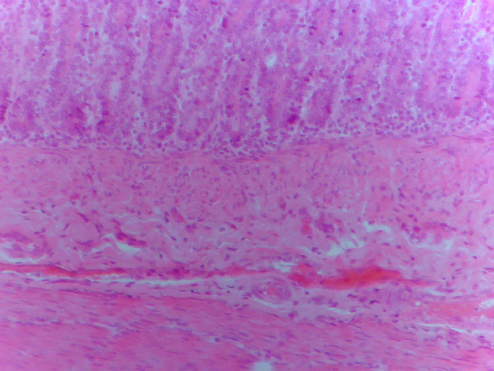
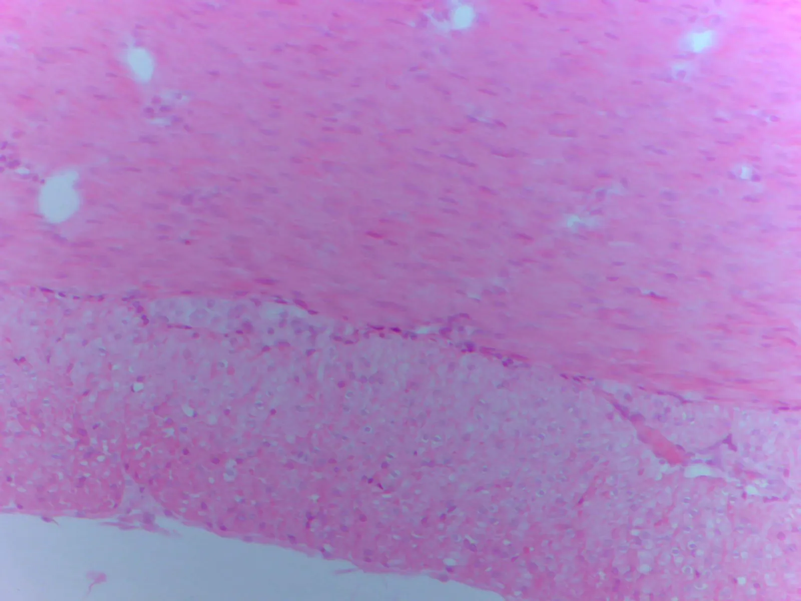
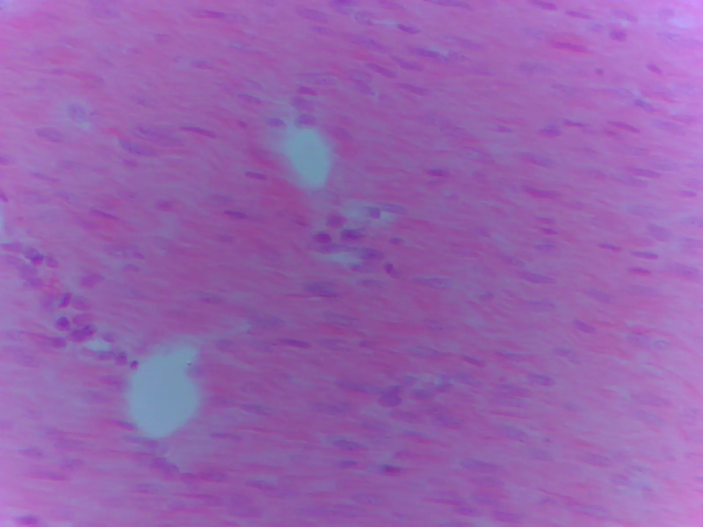
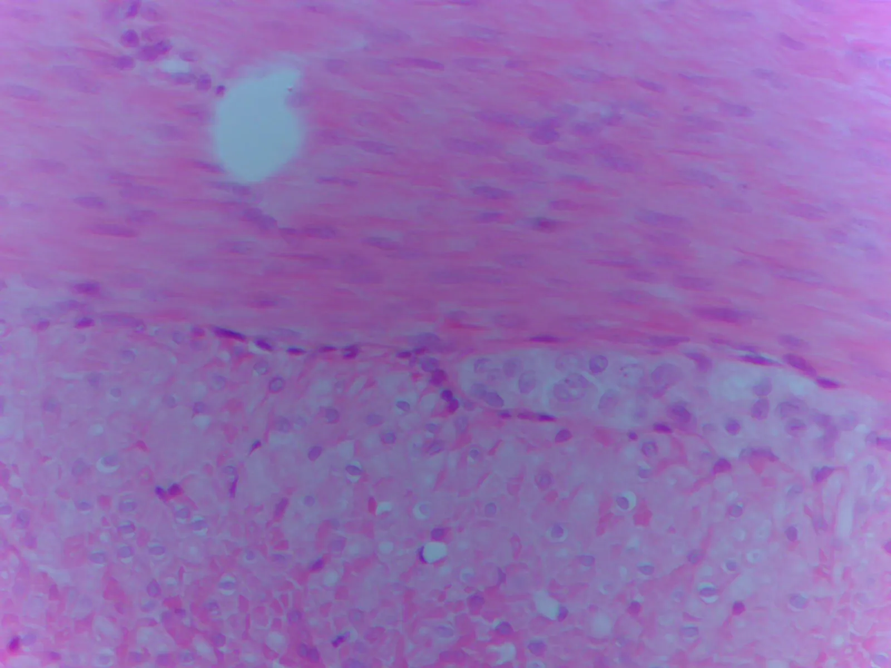
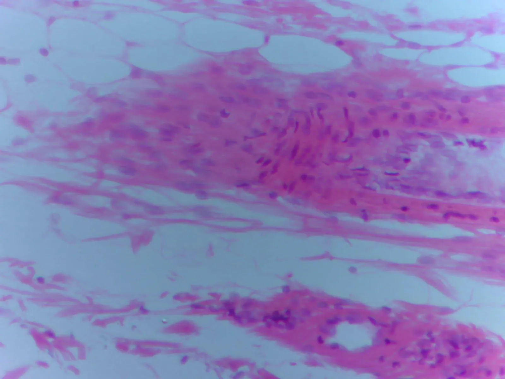
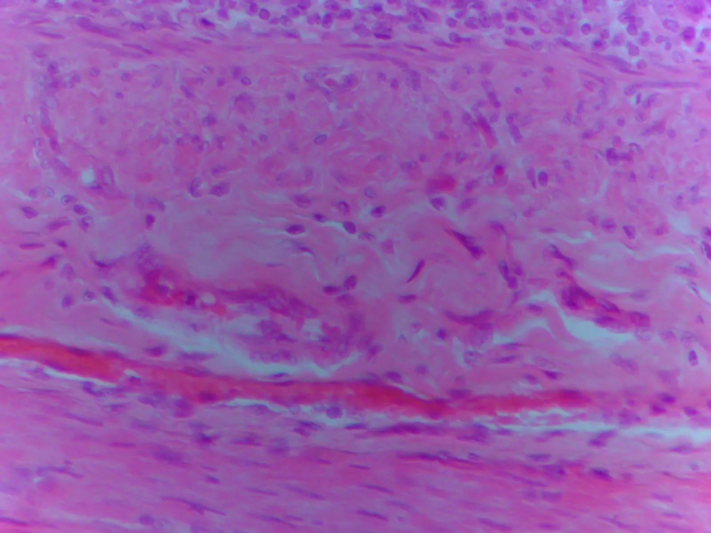
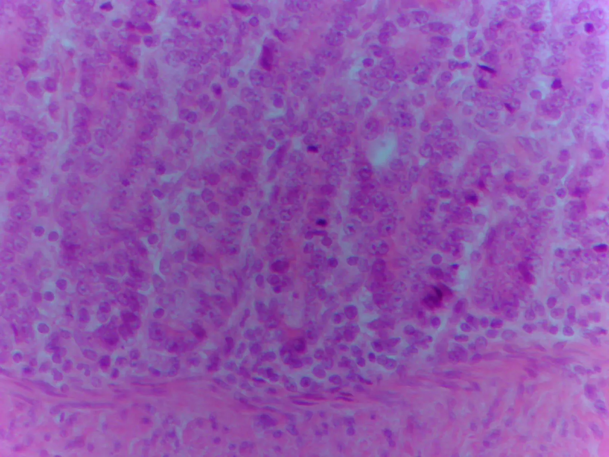

Lâmina 20 · Tecido muscular
Músculo liso (corte transversal)







Toque na imagem para ampliar. No computador, use as setas do teclado para trocar de imagem.
Lâmina 20 · Tecido muscular







Toque na imagem para ampliar. No computador, use as setas do teclado para trocar de imagem.